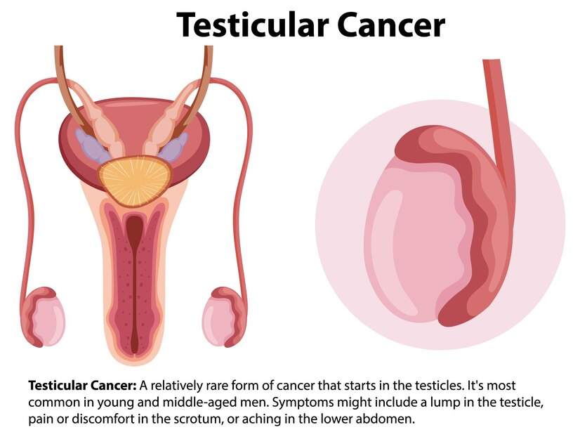
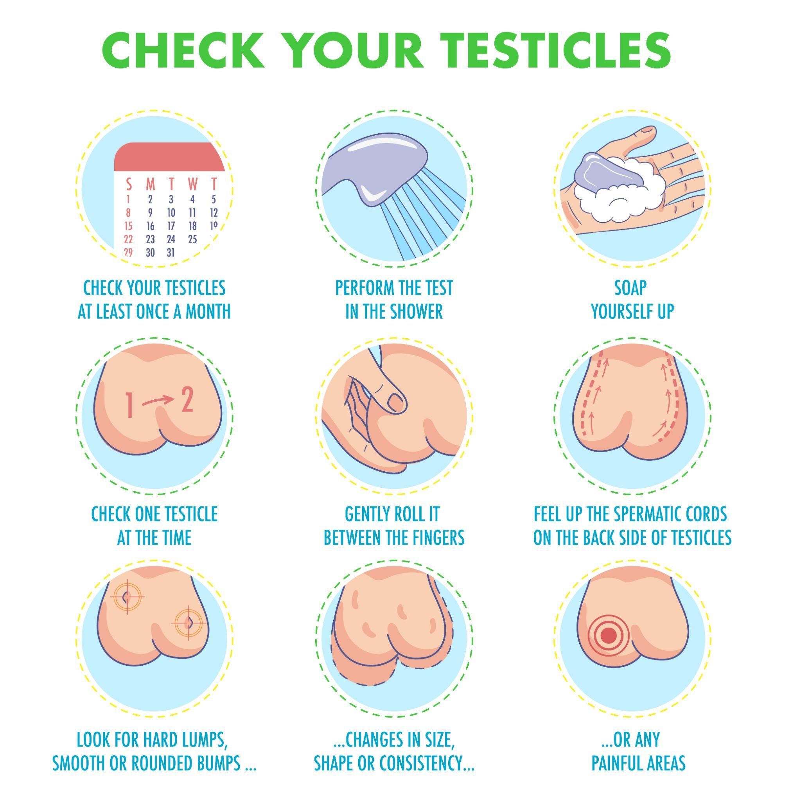

Testicular Cancer


Testicular Cancer
When cells in the testicle proliferate and create a tumour, it results in testicular cancer. It is rare. Sperm-producing germ cells are the starting point of more than 90% of testicular cancers. Germ cell tumours (GCTs) come in two varieties. Radiation and chemotherapy work wonders for seminoma growth, which can happen slowly. In addition to growing more quickly, non-seminomas may respond less to those treatments. Different non-seminomas exist: teratoma, embryonal carcinoma, choriocarcinoma, and yolk sac tumours.
Rarely, testicular cancers can also develop outside of the germ cells. The testosterone-producing Leydig cells give rise to tumours known as Leydig cell tumours. The Sertoli cells that facilitate sperm growth typically are the source of Sertoli cell tumours. Multiple cell types can be present in testicular tumours.
The treatment will be guided by the type of testicular cancer cell discovered, your symptoms, and other factors.
Types of testicular cancers:
Testicular germ cells that aggregate to form a mass or tumour are responsible for about 90% of cases of testicular cancer. Eventually, germ cells differentiate into sperm. Germ cells are the source of two types of testicular cancer.
- Seminoma: Slow-growing cancer that mostly strikes adults in their 40s or 50s.
- Non-seminoma: Cancer grows more quickly than seminomas. The age groups most affected are the late teens, early 20s, and early 30s. Tumours other than seminomas fall into four categories. The type of germ cell that constitutes each tumour gives it its name. The following tumour types are not seminomas: choriocarcinoma, teratoma, yolk sac carcinoma, and embryonal carcinoma.
Some testicular cancer tumours consist of both seminoma and non-seminoma cells.
Signs and symptoms of testicular cancer:
Testicular cancer may have no symptoms. A painless swelling, a lump in the testicles, or a change in size or shape are the most typical symptoms.
Less frequent symptoms consist of:
- Back pain
- Sense of unevenness
- Sense of heaviness in the scrotum
- Swelling of the testicle, with or without pain
- A pain in the scrotum, testicles, or lower abdomen
- Men's breast tissue changes or tenderness brought on by hormones produced by cancer cells.
If you notice any of these symptoms, don't panic—they can also be signs of other conditions. However, just to be sure, make an appointment with your provider. Cancer treatment becomes more difficult when diagnosis is delayed, giving cancer cells more time to spread.
Testicular cancer risk factors:
The exact cause of testicular cancer is not known, but many risk factors have been identified, such as:
- Undescended testicles (cryptorchidism)
- Family history of testicular cancer
- HIV or AIDS
- Hypospadias
- If you're previously diagnosed with testicular cancer, there's a higher chance of developing cancer in your other testicle.
- Age (most common between age 20 and 45).
- Testicular cancer can strike men of any race or ethnicity, but Caucasian men are four to five times more likely than men of other races to develop the disease for unknown reasons.
Testicular cancer prevention:
Cancer of the testicles cannot be avoided.
Testicular cancer does not presently have any recommended screening exams, in contrast to certain other cancers. Once a month, you should examine yourself in a warm shower. See a doctor if you observe any changes in the testicles.
Testicular cancer diagnosis:
The common methods for diagnosing testicular cancer are listed below.
- Self-examination: An essential component of early detection for testicular cancer is self-examination. Although quite uncommon, testicular cancer is very treatable, particularly if caught early. By regularly checking yourself, you can get accustomed to the way your testicles feel normally and quickly identify any changes that might be cause for concern. 
- Medical History and Physical Examination: The doctor will take a detailed medical history and ask about any symptoms or risk factors. They will then physically examine the testicles to check for any abnormalities or lumps.
- Ultrasound scan: Sound waves are utilised in testicular ultrasound to produce images of the testicles and scrotum without pain. A transparent gel is applied to the scrotum to ensure proper contact, and then the ultrasound probe is moved over the scrotum to capture the images.
- CT (Computed Tomography) Scan: CT scans can provide detailed cross-sectional images of the abdomen and pelvis, which can help identify if cancer has spread to nearby lymph nodes or other organs.
- Blood test: Testicular cancer can be identified through a blood test called a tumour marker test. The test looks for specific proteins, such as beta-human chorionic gonadotropin, alpha-fetoprotein, and lactate dehydrogenase. However, elevated levels of these markers don't always mean cancer is present. Your healthcare provider needs to conduct further investigation to identify the underlying cause of the abnormality.
- Staging: If testicular cancer is confirmed, further tests may be performed to determine the stage of the tumour and whether it has spread to other parts of the body. Staging helps guide the treatment plan.
Testicular cancer treatment:
Testicular cancer treatment techniques include:
- Surgery: During a testicular ultrasound, sound waves create images. Images of the testicles and scrotum can be created with it. Stretching your legs apart, you lie on your back for an ultrasound. An MD applies a transparent gel to the vagina. The images are taken by moving a hand-held probe over the scrotum.
- Radiation therapy: High-energy X-rays or other radiation types are used in radiation therapy to target and destroy cancer cells specifically. It is usually applied to testicular cancers that have spread to lymph nodes or other areas following surgery, such as seminoma. However, their use has decreased recently because alternative treatment options have advanced.
- Chemotherapy: Drugs are administered intravenously (via a vein) or orally as part of this treatment to either kill or prevent cancer cells from expanding. Radiation therapy and chemotherapy can be used separately or together.
Care at Omega Hospital: Omega Hospitals in India is a renowned healthcare institution specialising in exceptional cancer care services. The hospital has highly skilled oncologists who provide multidisciplinary treatment for testicular cancer, ensuring comprehensive and effective patient treatment and promoting a speedy recovery.
Looking for high-quality and affordable medical treatment?
Choose Omega Hospitals for the best and most affordable cancer treatment
With a team of skilled medical professionals and advanced equipment, Omega Hospitals is dedicated to providing the best possible care to patients.